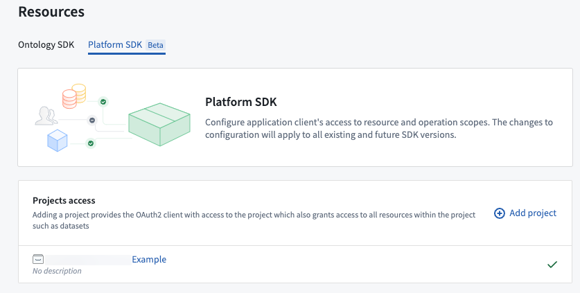
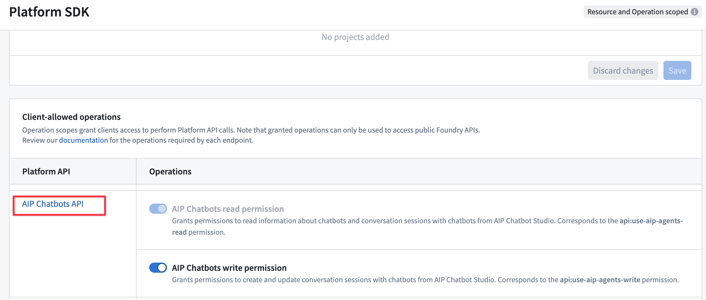
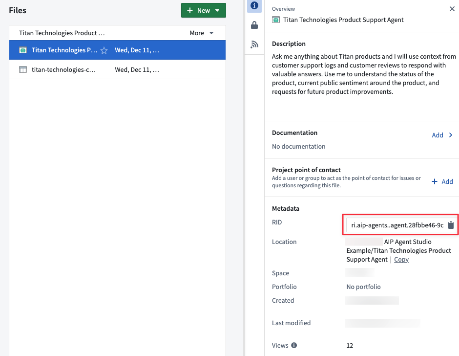

To build applications on top of the Foundry platform, you can embed chatbots into your applications using the Palantir APIs.
Easily build multi-shot interactions with your chatbots over the API, using its options to:
parameter previously used in Chatbot Studio, now available as Application state/variables. Use the parameterInputs field in requests to provide inputs. Use the parameterUpdates field for blocking responses (or load the session exchange after streaming) to read custom outputs.For straightforward, single-use tasks that do not need extensive session management, consider using chatbots as functions. You can access a chatbot as a function from a third-party application using the Palantir OSDK.
Once you have configured and published your AIP Chatbot, you can create and configure a Developer Console application to interact with your AIP Chatbot in a custom application.
To enable your Developer Console application to interact with your AIP Chatbot using platform APIs, follow the steps in create a new Developer Console application to create a new SDK application with access to Platform SDK resources:
:::callout{theme="neutral"} To use an AIP Chatbot from an Ontology SDK application, you must configure the AIP Chatbot to only use object types, action types or function types from a single Ontology. :::

:::callout{theme="neutral"} To allow your Developer Console application to create and send messages in conversation sessions with an AIP Chatbot, you must enable the AIP Chatbots write permission. :::

Once you have configured a Developer Console application to allow interaction with an AIP Chatbot through Platform SDK resources, you will need to update the application if any of the Ontology or platform resources used by your AIP Chatbot are modified.
For example, if you add any new object types, action types or function types to the AIP Chatbot, you must add these to the Ontology SDK resources for your application in Developer Console. Similarly, if you add any platform resources to your AIP Chatbot, such as additional media sets for document context retrieval, you must add these to the Platform SDK resources for your application. Developer Console application resources are not updated automatically when changes occur to the types of resources used by your AIP Chatbot.
To get started bootstrapping a new application, refer to the documentation examples for TypeScript or Python, or add the SDK to an existing application.
Once you have created your application, use the Create Session platform API to create a new conversation with your AIP Chatbot.
:::callout{theme="neutral"}
The Sessions APIs for AIP Chatbots require you to specify the agentRid for the AIP Chatbot to use for conversation session interactions.
You can find this by opening the project for your AIP Chatbot, selecting the AIP Chatbot and using the Copy to clipboard option for the RID under Metadata in the file overview.

:::Once you have created a new session, use the sessionRid value in the returned response to send a new message to the AIP Chatbot and get responses using the Blocking continue session or Streaming continue session platform APIs. Use the blocking API to wait to receive the full AIP Chatbot response once it is fully generated, or use the streaming API to receive a stream of the AIP Chatbot's answer text as it is generated.
You can load conversation metadata for a session using the Get Session API, and load the history of exchanges (messages sent by your application and responses from the AIP Chatbot) for a session with the Get Content API.
You can use the Get Session Trace API to retrieve the sequence of steps taken by the AIP Chatbot, which can be useful for debugging or understanding the chatbot's reasoning process. The endpoint requires a sessionTraceId which you can obtain in two ways:
sessionTraceId in the request to the Blocking continue session or Streaming continue session APIs. This option allows you to poll the 'Get Session Trace' API and see the real-time trace of the chatbot's answer generation.sessionTraceId field in the response from the Blocking continue session API.sessionTraceId field on the exchange results in the response from the Get Content API.Refer to the platform API documentation for code examples on how to use these APIs in your target application language.